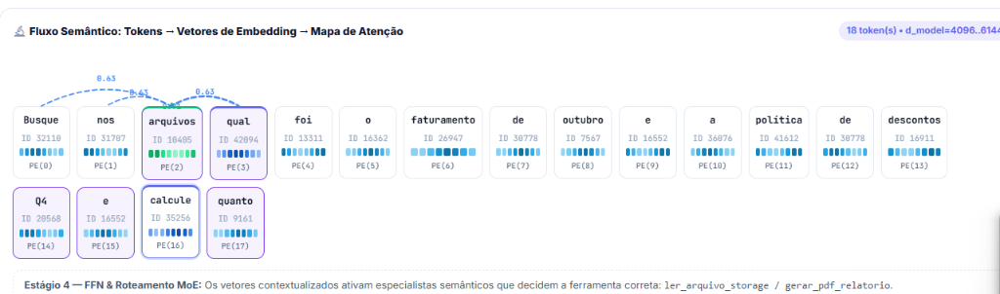
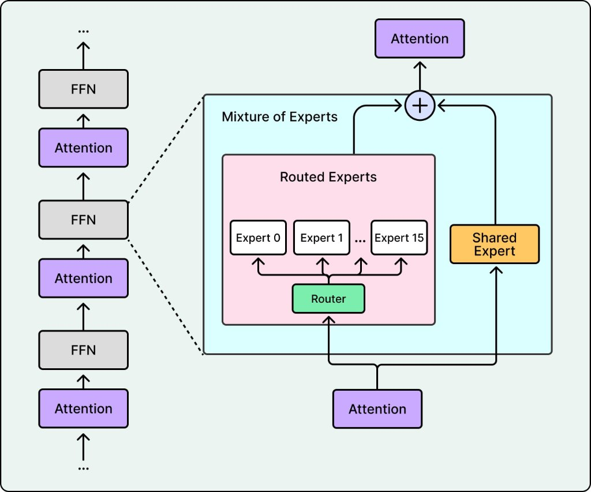
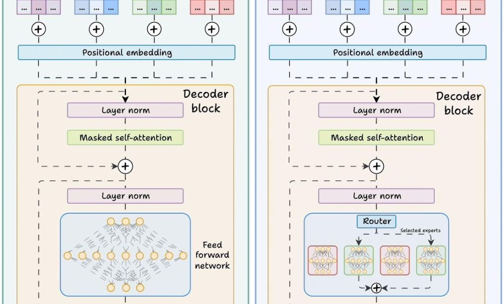
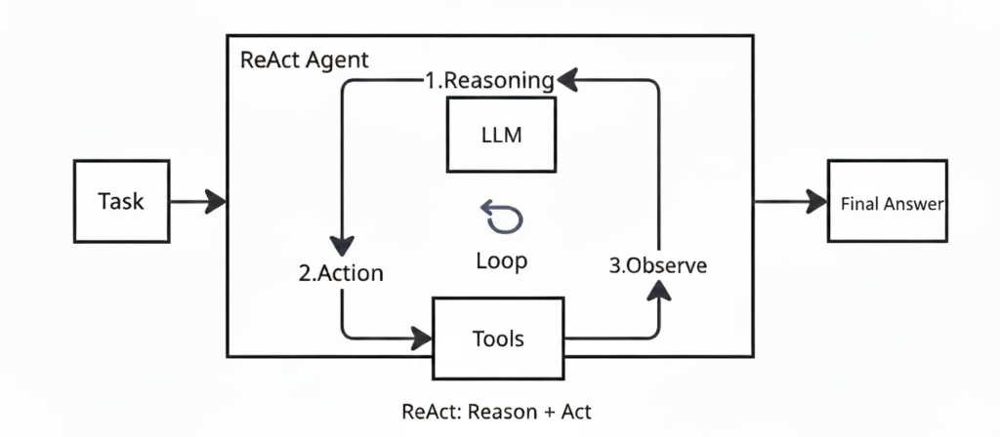
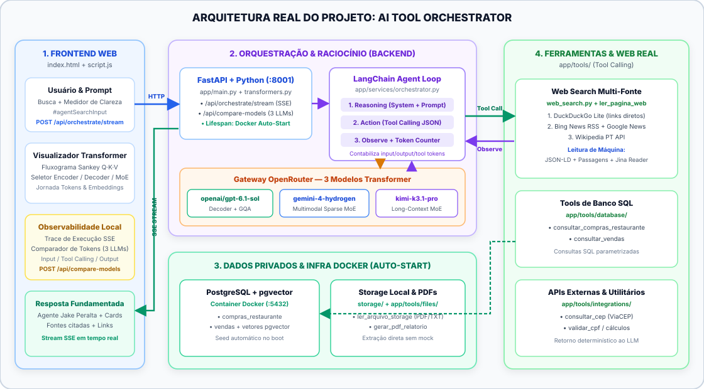

Saindo de um LLM isolado para uma arquitetura multiagente integrada a documentos, PostgreSQL/pgvector, busca web em tempo real e observabilidade.
Como integrar modelos Transformers a documentos, bancos de dados, ferramentas externas e fluxos de processamento para construir aplicações inteligentes controladas?
Interseção entre Linguística Computacional e Aprendizado de Máquina voltada a interpretar, representar e gerar linguagem humana, resolvendo ambiguidades em 4 níveis: morfológico/léxico, sintático, semântico e pragmático (Jurafsky & Martin, 2024).
De modelos estatísticos esparsos ($n$-gramas; Manning & Schütze, 1999) a modelos neurais distribuídos em espaço contínuo (Bengio et al., 2003).
| Paradigma | Mecanismo Central | Limitação Superada / Atual |
|---|---|---|
| Regras Simbólicas | Gramáticas formais e padrões explícitos | Baixa cobertura e fragilidade a ambiguidade |
| ML Estatístico | $n$-gramas, HMMs, SVM e TF-IDF | Esparsidade e dependência de features manuais |
| Deep Learning | Embeddings contínuos + RNN / LSTM | Processamento sequencial e custo de treino |
| Transformers | Self-Attention contextual e paralelismo | Complexidade $O(n^2)$ e janela finita |
| LLMs | Pré-treino em larga escala + alinhamento | Alucinações e ausência de dados vivos sem ferramentas |

Cada palavra/subpalavra recebe um ID discreto ($t_i$), um vetor de Embedding (barras coloridas) e sua posiçãoPE(pos).
"fatur" + "##amento")."Busque" → ID 32110).32110 e 31707 são apenas rótulos; o significado só surge no Embedding.Hipótese Distribucional (Harris, 1954; Firth, 1957): palavras em contextos semelhantes compartilham significado. Diferente de vetores one-hot ($\in \{0,1\}^{|V|}$, esparsos e ortogonais entre si), o Embedding projeta cada token em um espaço denso contínuo $\mathbb{R}^d$ ($d = 768 \dots 6144$).
"faturamento", "vendas", "receita") apontam em direções alinhadas ($\text{sim}_{\cos} \to 1$), permitindo operações algébricas de sentido (Mikolov et al., 2013).pgvector: embeddings de trechos permitem busca semântica por significado mesmo sem palavras idênticas.storage/) nem páginas web em tempo real.Questão Central: Como integrar modelos Transformers a documentos, bancos de dados, ferramentas externas e fluxos de processamento para construir aplicações inteligentes?
Ponto-chave: O LangChain não substitui o Transformer nem treina modelos. Ele organiza prompts, parsers, recuperadores (RAG), ferramentas externas e agentes em fluxos controláveis.
Cada token é mapeado em um vetor contínuo + posição:
$$x_i = e_i + p_i \in \mathbb{R}^{d}$$ $$X \in \mathbb{R}^{n \times d}$$| Critério Arquitetural | RNN | LSTM | Transformer |
|---|---|---|---|
| Caminho entre quaisquer 2 palavras | $O(n)$ passos | $O(n)$ passos | $O(1)$ salto direto |
| Paralelismo no treinamento (GPU) | Não (sequencial) | Não (sequencial) | Sim (paralelo total) |
| Representação da memória | Vetor único $h_t$ | Célula fixa $C_t$ | Matriz completa $Q \cdot K^T$ |
$\frac{1}{\sqrt{d_k}}$ evita saturação do Softmax; $\text{softmax}(z_i)=\frac{e^{z_i}}{\sum_j e^{z_j}}$ garante pesos que somam 1 por linha.
Múltiplos subespaços aprendem relações distintas em paralelo (sintaxe, entidades, dependências longas).
Papéis distintos: a Atenção mistura informação entre tokens; a FFN aplica transformação não linear individualmente em cada posição.
No MoE, o roteador $g_i(x) = \text{softmax}(xW_r + b_r)_i$ ativa apenas os $K$ melhores especialistas por token, escalando capacidade sem explodir FLOPs.
| Critério | FFN Densa | MoE (Top-K) |
|---|---|---|
| Caminho | 1 rede compartilhada | $N$ especialistas + roteador |
| Parâm. ativos | 100% por token | Subconjunto Top-K por token |
| Desafio | Custo linear alto | Balanceamento e memória VRAM |

MoE substituindo a FFN: Router seleciona Routed Experts + Shared ExpertModelos modernos (LLaMA, GPT, Gemini, Kimi) usam Pre-Norm com RMSNorm e conexões residuais para estabilizar gradientes.
Seleção do próximo token (ou JSON de Tool Call) via Greedy ($T=0$), Temperatura, Top-K ou Top-P.

Fluxo completo no Decoder Block: Positional Embedding → LayerNorm → Self-Attention → Residual → FFN/MoE| Tecnologia | Responsabilidade na Arquitetura |
|---|---|
| LangChain | Abstrações para prompts, chains (LCEL), parsers, RAG, tools e agentes |
| LangGraph | Orquestração baseada em grafos com estado persistente, ciclos e intervenção humana |
| LangSmith | Rastreamento passo a passo, métricas de avaliação e observabilidade |
| OpenRouter / LiteLLM | Gateway unificado para múltiplos LLMs (OpenAI, Google, Moonshot, locais) com roteamento |
from langchain_openai import ChatOpenAI
model = ChatOpenAI(model="openai/gpt-6.1-sol", base_url="https://openrouter.ai/api/v1", temperature=0)chain = prompt | model | StrOutputParser()
res = chain.invoke({"assunto": "MoE"}){
"categoria": "financeiro",
"valor": 12500.00,
"requer_aprovacao": true
}Permite validar tipos com Pydantic e integrar o LLM a APIs e bancos com segurança.
Enviar PDFs e manuais inteiros em toda pergunta estoura tokens, aumenta custo e dilui a atenção. A solução é recuperar apenas os trechos relevantes no momento da consulta.
Altera os pesos do modelo via treinamento; caro para dados que mudam todo dia.
Injeta conhecimento externo no contexto em tempo de inferência com rastreabilidade de fonte.
chunk_overlap evita perda semântica nas fronteiras.Busca Híbrida + Reranking: combina escore vetorial denso + BM25 lexical + filtros de metadados; índices HNSW reduzem a busca para $O(\log N)$.
Unifica ACID relacional e busca por proximidade vetorial na mesma consulta, evitando sincronização complexa entre dois bancos:
SELECT content, 1 - (embedding <=> :q_vec) AS score
FROM doc_chunks
WHERE metadata->>'categoria' = 'operacional'
ORDER BY embedding <=> :q_vec LIMIT 4;Metadados restringem o espaço de busca antes ou durante o ranqueamento vetorial.
docstrings são injetados no contexto $C$; a Self-Attention alinha a intenção ($Q$) aos descritores ($K$) e aplica Constrained Decoding para garantir parâmetros tipados válidos.@tool
def calcular_faturamento(qtd: int, ticket: float) -> float:
"""Calcula faturamento sem erro aritmético."""
return qtd * ticketToolMessage no contexto para condicionar a síntese final.
Reasoning (LLM) -> Action (Tools) -> Observe -> Loop -> Final Answer" style="width:100%;max-height:290px;object-fit:contain;border-radius:8px;"> Ciclo ReAct (Reason + Act): o agente raciocina, aciona ferramentas, observa o retorno e itera até a resposta final.| Critério | Chain (LCEL) | Agent (ReAct) |
|---|---|---|
| Fluxo | DAG fixo ($A \to B \to C$) | Ciclo dinâmico condicionado a $o_t$ |
| Custo / Latência | Previsível (1 passada) | Variável ($k$ iterações no loop) |
| Uso ideal | Pipelines padronizados | Investigação multi-fonte |
Supera a imprevisibilidade de loops ReAct puros ao formalizar o fluxo agêntico como um grafo direcionado com ciclos controlados e estado persistente:
O Model Context Protocol (Anthropic, 2024) padroniza via JSON-RPC 2.0 (STDIO local ou HTTP/SSE remoto) como aplicações conectam LLMs a contextos externos:
postgres://schema), controladas pela aplicação.tools/list e invocadas via tools/call pelo modelo, além de templates acionados pelo usuário.Decoder-Only + GQA
Multimodal Sparse MoE
Long-Context MoE

Arquitetura real implementada: Frontend SSE, FastAPI + LangChain, OpenRouter (3 LLMs), Docker PostgreSQL/pgvector e Tools:8001): orquestra LLMs via OpenRouter com Stream SSE em tempo real.pgvector (:5432) junto com o servidor local._accumulate_usage() mede tokens reais via /api/compare-models.Consulta avaliada: "Qual foi o total gasto em 2025 nas compras do restaurante?" (mode="database", HTTP 200 via /api/compare-models)
consultar_compras_restaurante)1.295 tokensBaseline (LLM isolado): 2.368,1 ms, 107 tokens — recusou por não ter acesso ao PostgreSQL (0% de acurácia factual). Com LangChain, gpt-6.1-sol resolveu com 63,5% menos tokens que kimi-k3.1-pro.
mode="auto")"Me vê os dados de 2025 aí"
"dados" não especifica se a fonte é PostgreSQL, storage/ ou Web.buscar_em_arquivos, consultar_compras_restaurante, consultar_vendas e web_search.6.478 input + 1.611 tool calling + 225 output = 6.703 tokens em 7.479,8 ms."Qual foi o total gasto em 2025 nas compras do restaurante?")| Cenário / Modelo & Arquitetura | LLM | Input / Tool / Total | Latência / Tools |
|---|---|---|---|
❌ Prompt Vago (GPT-6.1, auto, 13 tools) | 4 | 6.478 / 1.611 / 6.703 | 7.479,8 ms |
✅ Estruturado (GPT-6.1, auto, 13 tools) | 2 | 2.367 / 77 / 2.423 | 3.743,8 ms |
🎯 GPT-6.1-Sol (database, Decoder+GQA) | 2 | 1.384 / 77 / 1.439 | 3.678,5 ms |
🔵 Gemini-4-Hydrogen (database, Sparse MoE) | 3 | 2.391 / 434 / 2.786 | 2 tools |
🟣 Kimi-K3.1-Pro (database, Long-Ctx MoE) | 3 | 3.055 / 499 / 3.547 | 2 tools |
💬 Memória Turno 2 (GPT-6.1, database) | 2 | 2.212 / 135 / 2.304 | 3.592,3 ms |
| ⚡ Chain Fixa (LCEL, 1 passo) | 1 | — | 1.705,2 ms |
bind_tools restrito: cortar de 13 para 3 tools SQL economizou mais 40,6% (2.423 → 1.439 tokens).GQA convergiu em 1 tool; Sparse MoE e Long-Ctx MoE validaram 2 tools (+94% e +146% tokens).input em +59,8% pelo histórico.| Métrica | O que Avalia | Foco na Arquitetura |
|---|---|---|
| Faithfulness | A resposta está 100% fundamentada nas fontes recuperadas? | Combate alucinações |
| Answer Relevance | A resposta atende objetivamente à pergunta do usuário? | Qualidade do LLM/Prompt |
| Context Precision / Recall | Os trechos recuperados são relevantes e completos? | Qualidade do RAG / Web Search |
| Latência & Custo | Tempo total (ms) e tokens (Input + Tool Calling + Output) | Eficiência operacional |
Observabilidade completa: registrar prompt, modelo, ferramentas acionadas, payloads, erros e consumo de tokens (como implementado no Trace & Comparador e no LangSmith).
3.547 vs 1.295 tokens).Resposta à Questão Central: Um Transformer interpreta e gera linguagem; o LangChain conecta o modelo a dados (RAG/SQL), ferramentas e APIs; o LangGraph garante controle de estado e segurança; e a observabilidade de tokens permite otimizar custo e precisão.
arXiv:2302.04761) • Yao et al. (2023) — ReAct.arXiv:2304.08354).docs.langchain.com).docs.smith.langchain.com).github.com/pgvector/pgvector).modelcontextprotocol.io).